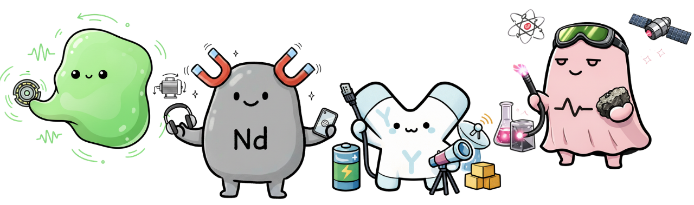

あなたの性格にぴったりの元素が見つかる！✨12問でわかる「17元素レアアース性格診断」 👉 あてはまる答えをクリックして選んでください
Q1（E：活力） 人と話すと元気になる
Q2（E：挑戦） 新しいことに挑戦するのはわくわくする
Q3（E：行動） 思いついたらすぐ動くほうだ
Q4（A：承認） がんばったときはだれかに気づいてほしい
Q5（A：違和感） いつもと様子がちがうことに気づくほうだ
Q6（A：空気） 人がいる場で空気が変わるとすぐ気づく
Q7（S：没頭） 好きなことにはまわりが見えなくなるほど集中する
Q8（S：美学） どんな時も、自分なりのスタイルや美学を崩さずにいたい
Q9（S：信念） 自分の考えはわりと曲げないほうだ
Q10（C：ひらめき） アイデアは急に思いつくことが多い
Q11（C：即断） なにかを決めるときはわりと早く決められる
Q12（C：直感重視） 複雑に考えるより、直感で動くことを大切にしている